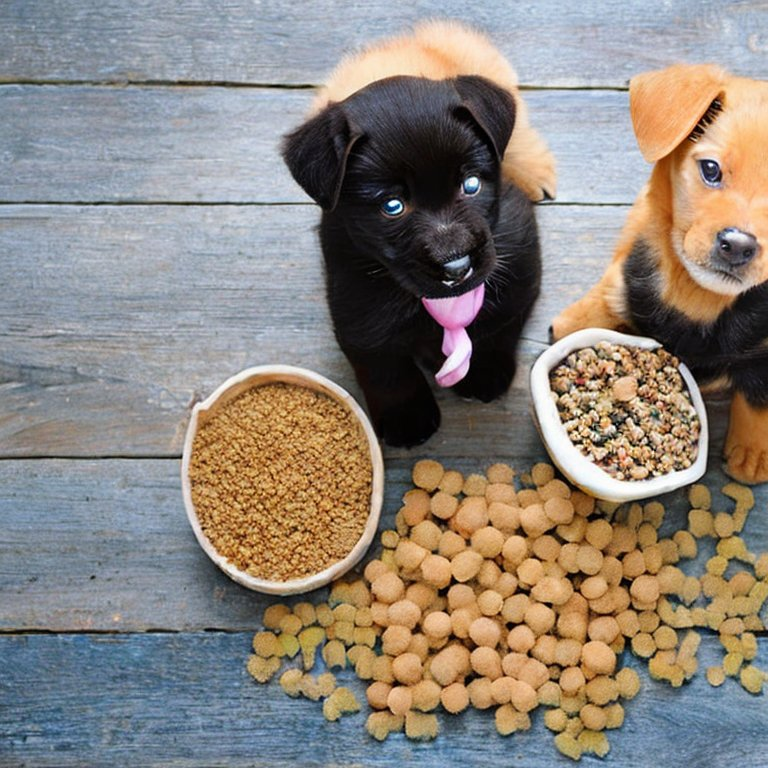
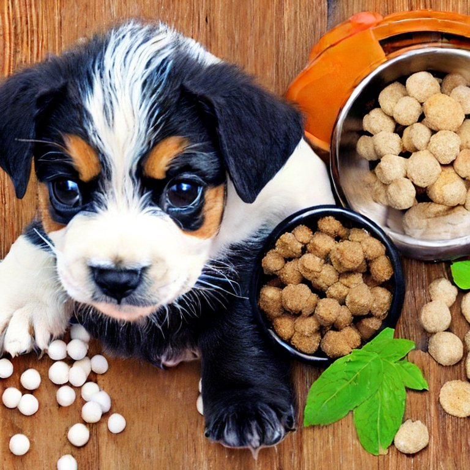

강아지 양육을 위한 기본 용품.
식사 용품
식기, 물병, 간식 보관함 등 건강한 식단을 위한 필수 용품들
강아지 건강 관리
강아자 건강을 지키는 것이 1년에 1-2회 정기 검진을 통해 질병 예방과 건강 관리가 필요하다. 정기적인 수의사 방문을 통해 강아지의 건강을 관리한다. 건강한 강아지는 더 행복하고, 유대감을 형성하기 쉽다.
- 정기적인 수의사 방문
강아지는 매년 또는 필요에 따라 수의사에게 정기적인 건강 검진을 받아야 한다. 이는 질병을 조기에 발견하고 예방하는 데 중요하다. 체중, 식이, 운동, 행동 등 전반적인 건강 상태에 대한 상담을 받는 것도 중요하다.
- 적절한 영양 관리
강아지의 나이, 크기, 활동 수준에 맞는 균형 잡힌 식단을 제공해야 한다. 상업용 강아지 사료는 영양 균형이 잘 맞춰져 있으므로 적절하다. 과식과 비만을 방지하기 위해 적절한 식사량을 제공하고, 간식은 제한적으로 준다.
- 운동과 활동
강아지의 에너지 수준에 맞는 적절한 운동을 제공한다. 산책, 달리기, 놀이 등을 통해 신체 활동을 유지한다. 강아지도 정신적 자극이 필요합니다. 퍼즐 장난감, 훈련, 놀이를 통해 두뇌 활동을 촉진하다.
- 위생 관리
1) 털 관리: 털이 많이 빠지거나 엉키지 않도록 주기적으로 빗질을 해준다. 특히 장모종은 더 자주 빗질이 필요하다.
2) 귀 청소: 귀를 정기적으로 검사하고, 필요시 깨끗하게 청소해 준다. 이것은 귀 감염을 예방하기 위해 중요한 과정이다.
